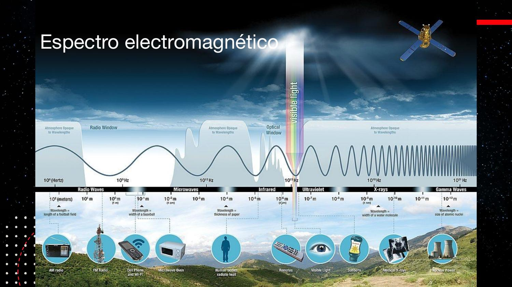
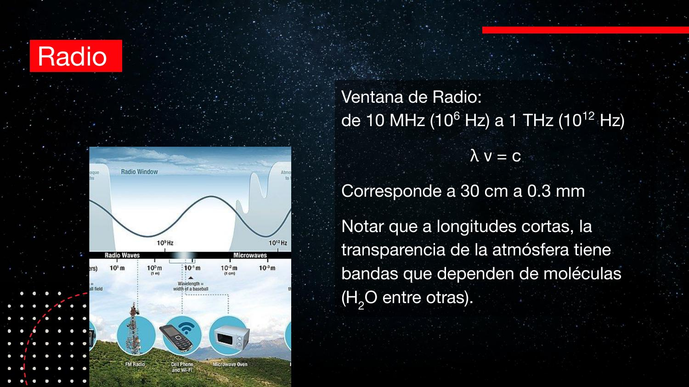
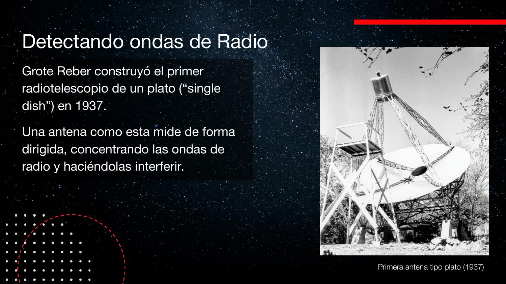
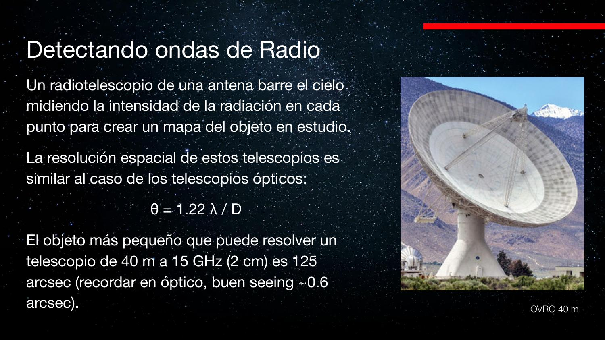
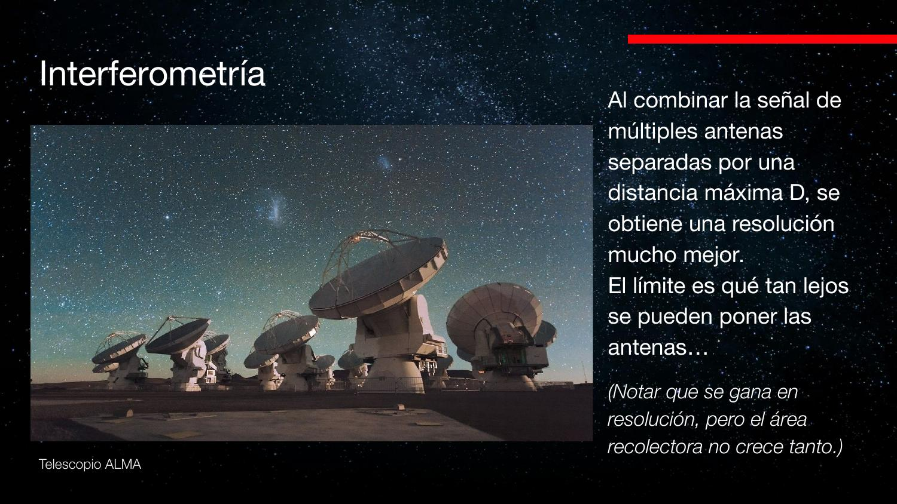
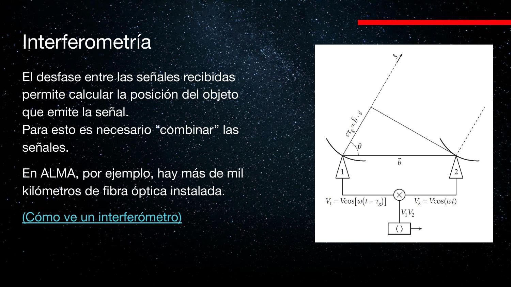
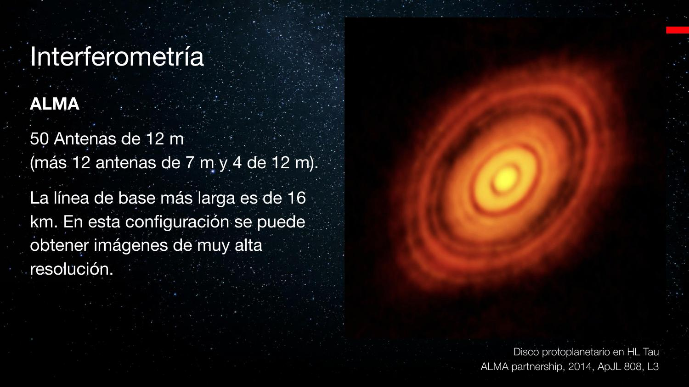
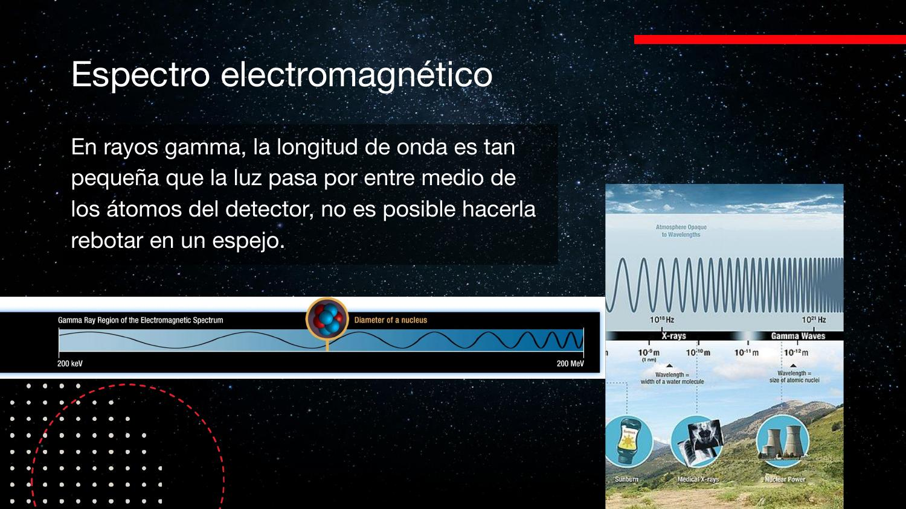
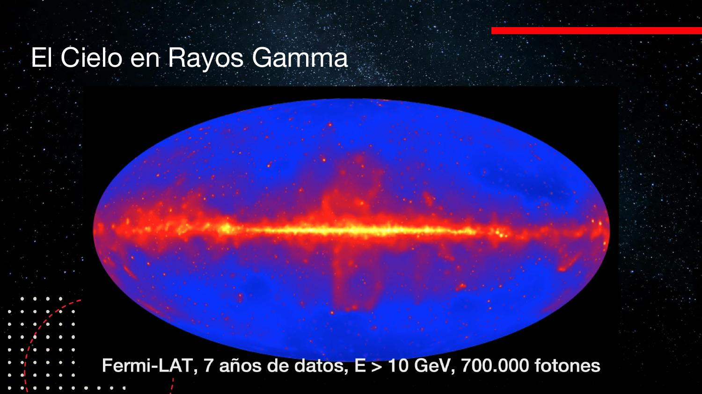

De la radio a las altas energías
Los dos extremos del espectro electromagnético exigen tecnologías opuestas: antenas e interferómetros que suman ondas en fase (ALMA, EHT), y detectores de partículas que cazan fotones uno a uno (Fermi-LAT, Cherenkov Telescope Array).
Todo es luz — del radio al gamma son fotones — pero un fotón de radio lleva energías ínfimas y uno gamma atraviesa cualquier espejo. En un extremo hay que amplificar ondas coherentes; en el otro, contar partículas. Esta clase recorre ambos mundos y el porqué de sus tecnologías tan distintas.
Ventanas atmosféricas: qué deja pasar el aire
La atmósfera es transparente solo en dos grandes ventanas: el óptico (donde evolucionó nuestro ojo) y el radio.
Sobre el espectro electromagnético completo, la curva de transmisión atmosférica dice dónde se puede observar desde el suelo:
- Altas energías (UV, rayos X, γ): la atmósfera es opaca. Nos protege — y nos ciega: hay que ir al espacio (o usar trucos, §11).
- Ventana óptica: transparente justo donde funciona el ojo. Probablemente no es casualidad evolutiva.
- Infrarrojo: opacidad alta con algunas bandas utilizables; por eso conviven telescopios IR en el suelo y en el espacio.
- Ventana de radio: enorme y transparente — ahí operan también nuestras tecnologías (radio, celulares, WiFi).
- Más allá del radio (λ muy largas): opaca de nuevo.

La ventana de radio
De 10 MHz a 1 THz: fotones de bajísima energía. En el extremo milimétrico, el vapor de agua vuelve a estorbar.
La ventana de radio va de ~10 MHz a ~1 THz; con \(\lambda\nu=c\), eso corresponde a longitudes de onda de ~30 m a ~0,3 mm (el rango «clásico» de un plato: ~30 cm a 3 mm). Como \(E=h\nu\), son los fotones menos energéticos del espectro: no se cuentan de a uno, se detectan como ondas que inducen corrientes.
Hacia el milimétrico/submilimétrico aparecen bandas de absorción de moléculas — sobre todo vapor de agua. Por eso ALMA (Atacama Large Millimeter/submillimeter Array) está en el llano de Chajnantor a ~5000 m: altura extrema + desierto = mínima columna de agua sobre las antenas.

El microondas de tu cocina opera a 2,45 GHz — λ ≈ 12 cm, en plena ventana de radio. El experimento escolar de los marshmallows quemados en franjas es literalmente medir λ con una grilla de dulces.
Antenas: de Jansky a los dipolos modernos
Un radiotelescopio no es necesariamente un plato: puede ser un campo de alambres.
El primer radiotelescopio lo construyó Karl Jansky en 1932 (los futuros sucesores del VLA llevarán su nombre: ngVLA). Jocelyn Bell descubrió los púlsares con un arreglo de antenas de alambre, no con un plato.
¿Cómo detecta un alambre? La onda electromagnética es una oscilación del campo eléctrico: al atravesar un conductor, el campo empuja los electrones libres arriba y abajo; esa oscilación de electrones es una corriente, y esa corriente es la señal. Alambres en distintas orientaciones capturan distintas polarizaciones.
- Esta tecnología sigue vigente: los precursores del SKA (Square Kilometre Array), como el MWA en Australia (70–300 MHz), son campos de dipolos sobre mallas aislantes.


La antena parabólica: geometría al servicio de la fase
La parábola no es capricho: garantiza que todas las ondas recorran el mismo camino y lleguen en fase al foco.
Como el telescopio óptico, el plato concentra la radiación en un foco. Pero hay una diferencia crucial: la forma es parabólica porque así todos los caminos desde un frente de onda plano hasta el foco miden lo mismo. Las crestas llegan con las crestas y los valles con los valles: interferencia constructiva, señal amplificada.
Interferencia en 30 segundos
- Dos ondas en fase (crestas alineadas) se suman: onda más grande.
- Dos ondas desfasadas media λ se cancelan (así funcionan los audífonos con cancelación de ruido).
En el óptico esto casi no importa para imagen (se recolectan fotones, no fases); en radio, donde la energía por fotón es ínfima, la suma coherente es el mecanismo de detección. Consecuencia: si el plato apunta al objeto, señal máxima; apenas se desvía, los caminos difieren en fracciones de λ, la interferencia se hace destructiva y la señal cae. La antena «ve» un solo punto a la vez: para obtener una imagen debe barrer el cielo punto a punto, como construir la imagen píxel a píxel.

Estos aparatos operan en las mismas frecuencias que celulares y WiFi: los observatorios se rodean de zonas de silencio radioeléctrico. Incluso en Cerro Calán hay un sector donde se pide modo avión, porque una antena de prueba trabaja en las bandas de 2,4/5 GHz.
Resolución en radio: el problema de λ gigante
La misma fórmula θ ≈ 1,22 λ/D, pero con λ cien mil veces mayor: platos enormes, resolución pobre.
La resolución sigue siendo \(\theta \approx 1.22\,\lambda/D\), pero λ pasó de ~500 nm a centímetros: 5 órdenes de magnitud. Los ejemplos de clase:
- Plato de 40 m a 15 GHz (λ = 2 cm): θ ≈ 125″ — contra ~0,6″ de seeing de un buen sitio óptico chileno. Un plato 4× más grande que Keck resuelve 200 veces peor.
- FAST (China): 500 m de plato esférico fijo (usa ~300 m por observación, «iluminando» una zona del plato según la dirección). A λ = 10 cm (3 GHz): θ ≈ 50″. Medio kilómetro de antena y aún así resolución de arcominuto.


¿Para qué un plato gigante entonces? Sensibilidad: el área colectora de FAST supera a las 50 antenas de ALMA juntas — detecta señales mucho más débiles. Área compra sensibilidad; separación (§6) compra resolución. Son presupuestos distintos.
Interferometría: D pasa a ser la distancia entre antenas
Varias antenas usadas al unísono equivalen a un plato del tamaño de su separación máxima.
La idea genial: en \(\theta \approx 1.22\,\lambda/D\), D puede ser la distancia entre dos antenas que observan juntas. No hace falta construir el plato completo — basta poner «pedacitos del plato» separados por kilómetros. (El área colectora sigue siendo la suma de las antenas: se gana resolución, no sensibilidad.)
Cómo funciona un par
Dos antenas apuntan al mismo objeto. El frente de ondas llega antes a una que a otra: el desfase entre ambas señales codifica la dirección de origen. Las señales se combinan digitalmente en el correlador, que mide la interferencia entre ellas:
- Con 2 antenas hay degeneración: se obtiene una franja de posiciones posibles (y repeticiones cada λ entera de diferencia de camino).
- Con una tercera antena se agregan pares con otras orientaciones: las franjas se cruzan.
- Con muchas antenas (muchos pares), la combinación reconstruye una imagen. Cada par debe correlacionarse: el costo computacional crece con el número de pares.


Es apertura sintética: cada par de antenas muestrea una «frecuencia espacial» de la imagen (un punto del plano de Fourier). Más pares y más orientaciones = mejor cobertura del plano (u,v) = imagen reconstruible por transformada inversa. Las antenas de ALMA solo se instalan en plataformas pre-construidas con posición y retardo de fibra calibrados.
ALMA: 50 antenas y un supercomputador a 5000 m
Líneas de base de 16 km y λ submilimétrica: resolución para ver nacer sistemas solares.
- 50 antenas de 12 m (más 12 de 7 m y 4 de 12 m adicionales del Atacama Compact Array).
- Línea de base máxima: 16 km; λ hasta 0,3 mm. λ chica y D enorme ⇒ resolución altísima.
- La superficie de cada plato está mecanizada con precisión de micrones respecto de la parábola ideal — a estas λ, el plato es un espejo.
- Un transportador mueve las antenas entre plataformas fijas para cambiar la configuración (compacta ↔ extendida).
- El correlador es un supercomputador en el sitio a 5000 m; se construye una nueva generación que operará más abajo (~2900 m, cerca de San Pedro). ALMA no es solo antenas: sin el correlador no hay imagen.
El resultado icónico: los discos protoplanetarios como HL Tauri, con sus anillos y surcos — sistemas solares en formación, resueltos por primera vez.

La transcripción automática insertó «ALMA» en lugares donde el profesor decía «al» o «a la» (p. ej. «llegan ALMA foco»). Se restauró el sentido comparando con las diapositivas.
EHT: la Tierra entera como interferómetro
Línea de base de 8000 km, sin fibra posible: discos duros, relojes atómicos y correlación en diferido.
Llevando la idea al extremo: ¿la máxima separación posible entre antenas? El diámetro de la Tierra. El Event Horizon Telescope coordina radiotelescopios de varios continentes (ALMA incluido) observando el mismo objeto simultáneamente. Como no se pueden unir con fibra:
- Cada estación graba la señal cruda a disco con marcas de tiempo ultraprecisas (muestreo a escalas de femtosegundos, 10⁻¹⁵ s): petabytes por campaña.
- Los discos viajan físicamente a un centro donde un supercomputador hace la correlación en post-procesamiento.
- Con ~8000 km de línea de base, la resolución equivale a «ver una dona en la superficie de la Luna».
Así se obtuvieron las imágenes del anillo del agujero negro de M87 (y su jet). Hay propuestas de poner antenas en órbita: líneas de base de cientos de miles de kilómetros.

Altas energías: por qué no hay espejos para rayos gamma
Cuando λ es menor que la distancia entre átomos, la luz atraviesa el material: no se puede reflejar ni enfocar.
Al otro extremo del espectro, λ se hace más pequeña que el espaciado atómico del material. La analogía de clase: correr por un bosque de árboles muy separados — la onda pasa entre los átomos sin chocar. No existe superficie que haga rebotar rayos gamma:
- No hay espejo ⇒ no hay telescopio concentrador clásico.
- Tampoco sirve un CCD: su principio (efecto fotoeléctrico en silicio) requiere que el fotón interactúe, y el gamma atraviesa el chip.
- Es el mismo principio de la radiografía: los rayos X cruzan el cuerpo y solo se atenúan en el material denso (hueso).

En rayos X existe un truco intermedio: espejos de incidencia rasante (Chandra, XMM) que desvían fotones X en ángulos muy pequeños. En rayos gamma ni eso: solo detección directa por interacción.
Compton scattering y Fermi-LAT: contar fotones con nombre propio
Un cristal denso lleno de electrones disponibles: el gamma choca, cede energía, y la partícula cargada delata el evento.
La técnica principal en el espacio usa el efecto Compton: el fotón gamma tiene momentum y puede «chocar» con un electrón como bolas de billar — el electrón sale disparado, el fotón sigue con menos energía. Para que la probabilidad de choque sea razonable se usa un cristal denso, cuya red ordenada ofrece abundantes electrones de valencia casi libres. La partícula cargada resultante sí es detectable eléctricamente.
- Fermi-LAT (Large Area Telescope, lanzado en 2008): una «caja» de capas de cristales y trackers en órbita. Las capas atravesadas permiten reconstruir la dirección del fotón incidente.
- El régimen es de conteo de fotones: el mapa de todo el cielo mostrado en clase acumuló ~700 000 fotones en 7 años. Literalmente se les puede poner nombre (la anécdota del grupo italiano que bautizaba cada fotón X de su AGN con un papa).


El detector gamma opera en régimen de eventos discretos (photon counting): cada fotón es un registro con timestamp, energía y dirección reconstruida — más parecido a un log de eventos que a una imagen. La estadística de Poisson manda: con N fotones, el ruido relativo va como 1/√N.
Efecto Cherenkov y el CTA: la atmósfera como detector
Desde el suelo no se ve el gamma — pero sí el destello azul de la lluvia de partículas que provoca.
El efecto Cherenkov
Cuando una partícula cargada viaja más rápido que la luz en un medio (nunca más que c en el vacío), genera un frente de onda cónico — el análogo luminoso del boom sónico de un avión supersónico. Es el brillo azul del agua de los reactores nucleares (como el de La Reina).
De rayo gamma a flash azul
Un gamma que penetra la atmósfera interactúa con un átomo y desata una cascada de partículas secundarias cargadas (pares, piones…). Esas partículas superan la velocidad de la luz en el aire y emiten un destello Cherenkov: brevísimo, azulado, en luz óptica visible. La atmósfera — el mismo estorbo de las clases anteriores — se convierte en el volumen detector.
Cherenkov Telescope Array (CTA)
- Telescopios ópticos segmentados, sin cúpula, a cielo abierto: deben recolectar mucha luz en muy poco tiempo (el flash es de nanosegundos).
- La cámara en el foco no es un CCD: es una grilla de fotodetectores independientes con resolución temporal — cada uno cronometra la llegada del pulso. El orden de llegada reconstruye la dirección de la cascada.
- Con varios telescopios viendo la misma lluvia se triangula el origen del gamma: el resultado final es, de nuevo, un mapa de conteo de fotones por dirección.
- Dos sitios: La Palma (norte) y Cerro Paranal-Armazones, Chile (sur), cerca del VLT; el arreglo se despliega en ~2 km de desierto con telescopios de varios tamaños (los más grandes detectan las señales más débiles; en Chile llegarían hasta ~25 m).


El cielo multibanda: la moraleja del módulo
El centro de la Vía Láctea se ve distinto en cada banda — y solo la combinación cuenta la historia completa.
El póster clásico del centro galáctico en todas las longitudes de onda cierra la clase: en radio de baja frecuencia, en la línea de hidrógeno atómico (nótese lo delgado del disco de H I), en infrarrojo, óptico, rayos X y gamma, la misma región muestra estructuras completamente diferentes.
- Cada banda requiere su tecnología: platos y correladores, CCDs criogénicos, cristales en órbita, telescopios de flashes.
- Ninguna banda basta sola: la imagen física completa exige combinar — y la próxima clase agrega mensajeros que ya no son luz (ondas gravitacionales y neutrinos).

Ondas gravitacionales y neutrinos: detectar información del universo que no viaja como onda electromagnética. Y el detector de neutrinos enterrado en el hielo antártico.
Explorar conceptos
Resolución de plato único vs interferómetro, y la escalera de energías del espectro.
Conceptos clave
| Concepto | Nota |
|---|---|
| Ventanas atmosféricas | Óptico y radio transparentes; UV/X/γ y gran parte del IR solo desde el espacio; mm/submm exige sitios altos y secos (agua) |
| Ventana de radio | 10 MHz–1 THz (≈30 m–0,3 mm); fotones de mínima energía: se detectan como ondas, no como partículas |
| Antena de alambre | El campo eléctrico oscilante induce corriente en el conductor; Jansky 1932, Bell y los púlsares; vigente en SKA/MWA |
| Parábola y fase | Todos los caminos al foco miden igual ⇒ llegada en fase ⇒ interferencia constructiva; apuntar mal = interferencia destructiva |
| Barrido | Un plato único ve un «píxel» a la vez y construye el mapa punto a punto |
| Resolución en radio | θ ≈ 1,22 λ/D con λ enorme: 40 m @ 2 cm ⇒ 125″; FAST 500 m @ 10 cm ⇒ 50″ (vs seeing óptico ~0,6″) |
| Interferometría | D = separación máxima entre antenas (línea de base); el desfase entre pares codifica la posición; 2 antenas = franja, muchas = imagen |
| Correlador | Supercomputador que combina todos los pares; en ALMA, a 5000 m con >1000 km de fibra de largo calibrado |
| ALMA | 50×12 m (+12×7 m +4×12 m), base máx. 16 km, λ hasta 0,3 mm, platos con precisión de micrones: discos protoplanetarios resueltos |
| EHT / VLBI | Base ~8000 km; grabación a disco con timestamps de fs, petabytes, correlación en diferido: imagen del agujero negro de M87 |
| Sin espejos gamma | λ menor que el espaciado atómico: la luz atraviesa el material; ni espejo ni CCD sirven |
| Compton / Fermi-LAT | El γ cede energía a un electrón en un cristal denso; se detecta la partícula cargada; ~700 000 fotones en 7 años: régimen de conteo |
| Efecto Cherenkov | Partícula más rápida que c/n del medio ⇒ frente cónico luminoso (boom sónico de luz); el azul de los reactores |
| CTA | Telescopios ópticos sin cúpula + cámaras de fotodetectores con cronómetro; triangulación de lluvias; sitios en La Palma y Chile |
Exámenes de práctica
10 exámenes de 5 preguntas (3 alternativas autocorregibles + 2 escritas).